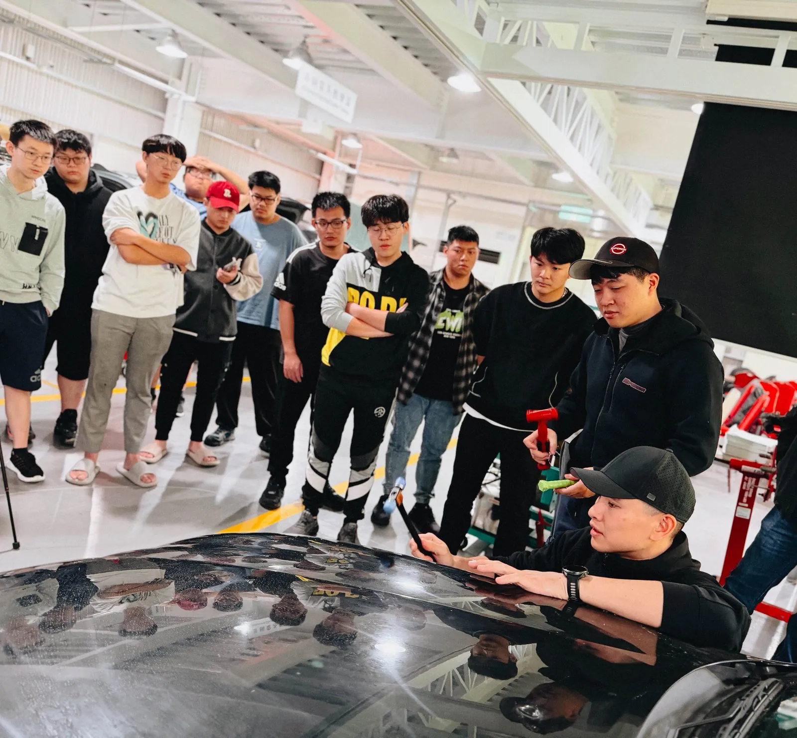
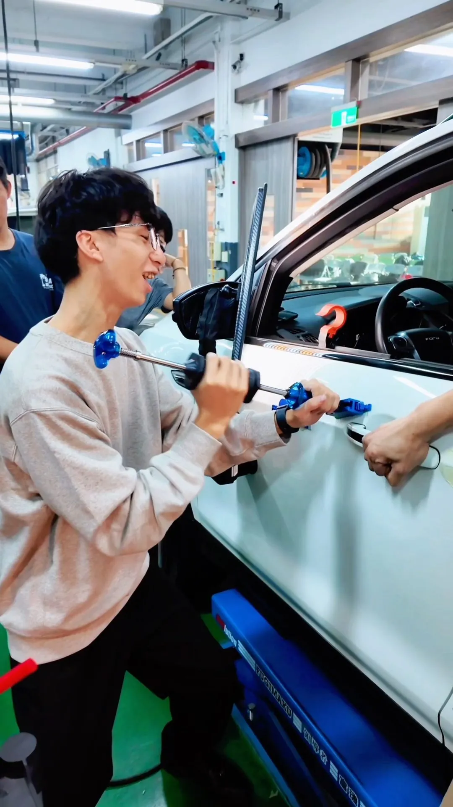

在快速變動的時代，產業需要的不只是學歷，而是真正能上手、能解決問題的專業技能。卓越凹痕修復多年深耕汽車車體修復領域，近年更積極走進校園，與各級學校、技職體系攜手合作，推動「技術向下扎根、教育與產業接軌」的實務教學行動。
我們深刻理解，許多學生在求學階段，對未來的職涯方向感到迷惘，對「技職」的想像也往往停留在刻板印象之中。
然而，現代汽車修復早已不只是傳統敲打與大量體力勞動，而是一門結合精密觀察、力學理解、工具應用與工藝美感的專業技術。
因此，我們希望透過校園講習與實作教學，讓學生能親眼看見、親手體驗、親身理解這項產業的真實樣貌，認識技術的價值，也認識自己的可能性。

我們的校園講習並非單向說明，而是以實務為核心，內容包含四個面向：
真正有價值的教育，不只是教會一個動作或一套流程，而是幫助學生建立三件事：
這也是我們走進校園最重要的初衷 —— 讓更多年輕人知道，技職不是退而求其次，而是一條值得驕傲、值得投入、也能被世界看見的道路。
卓越凹痕修復期待透過校園講習與教學合作，成為學校與產業之間的橋樑，讓教育不再只是課本上的知識，而是能真正銜接未來工作的能力。
我們相信，當學生提早理解產業、接觸實務、建立信心，未來走入社會時，將不再只是「找一份工作」，而是帶著技術、帶著價值，走向屬於自己的舞台。

從高中職汽車科到大學車輛工程學系 —— 點選卡片觀看講習紀錄影片。